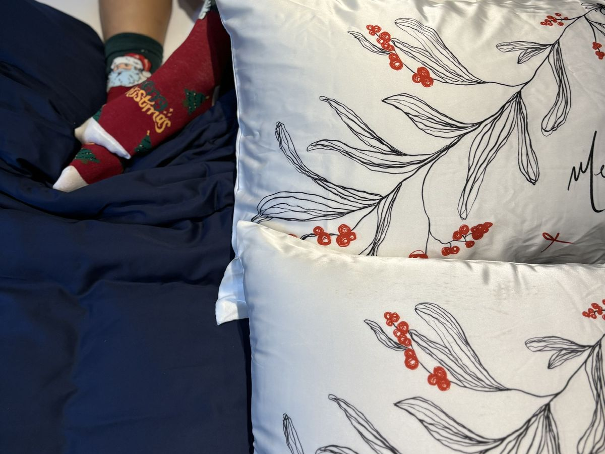
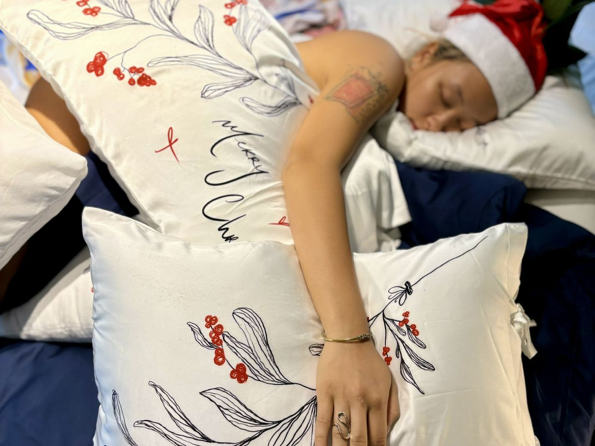
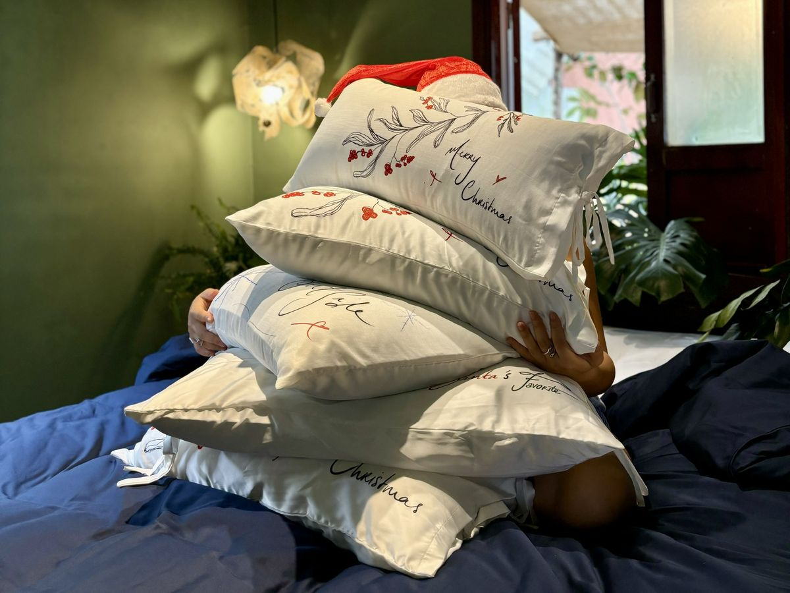
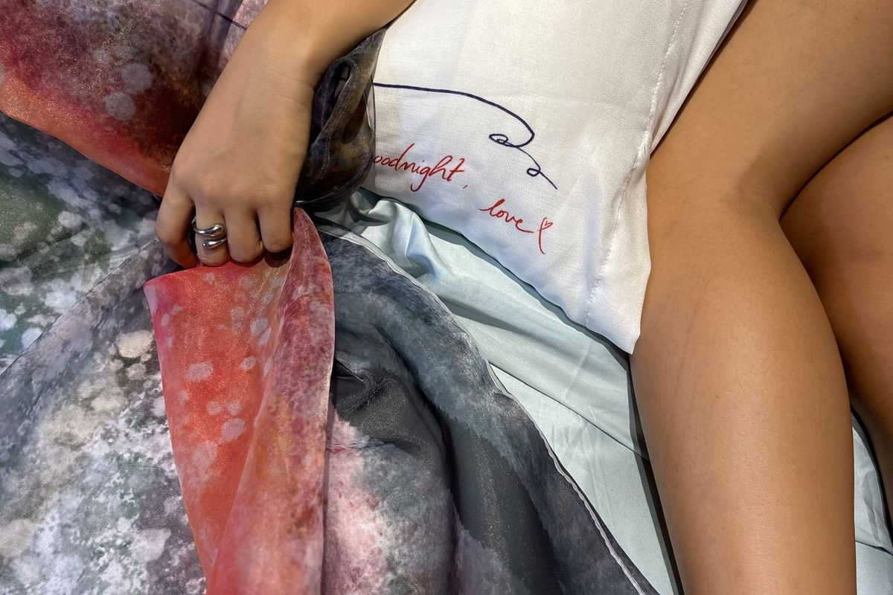
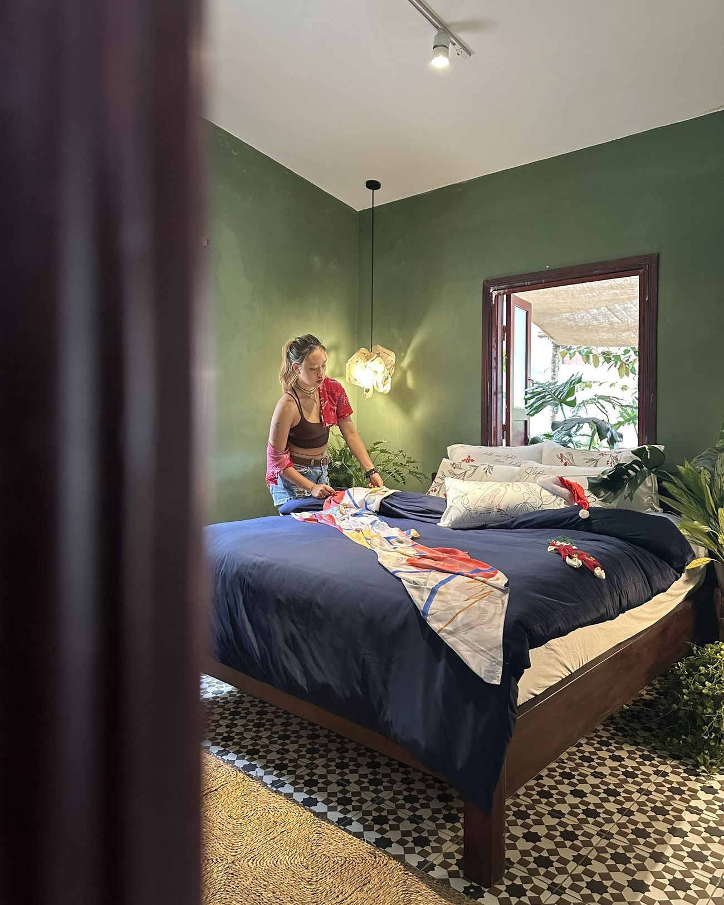
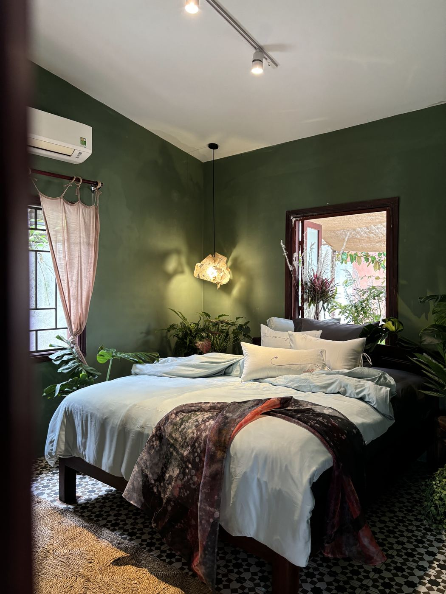
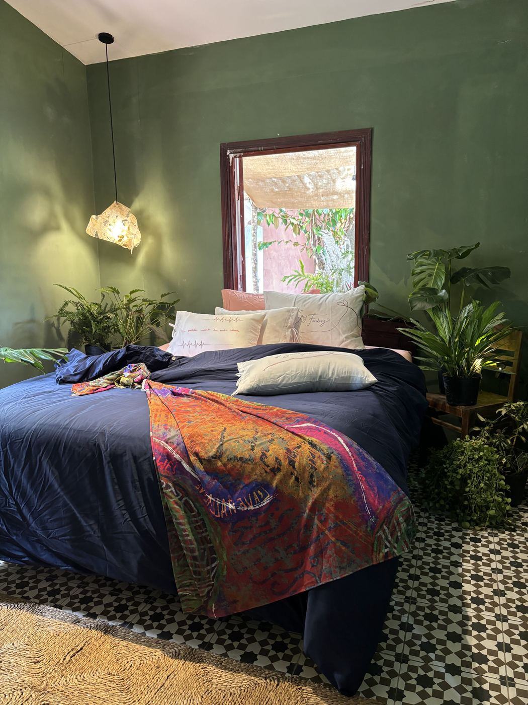
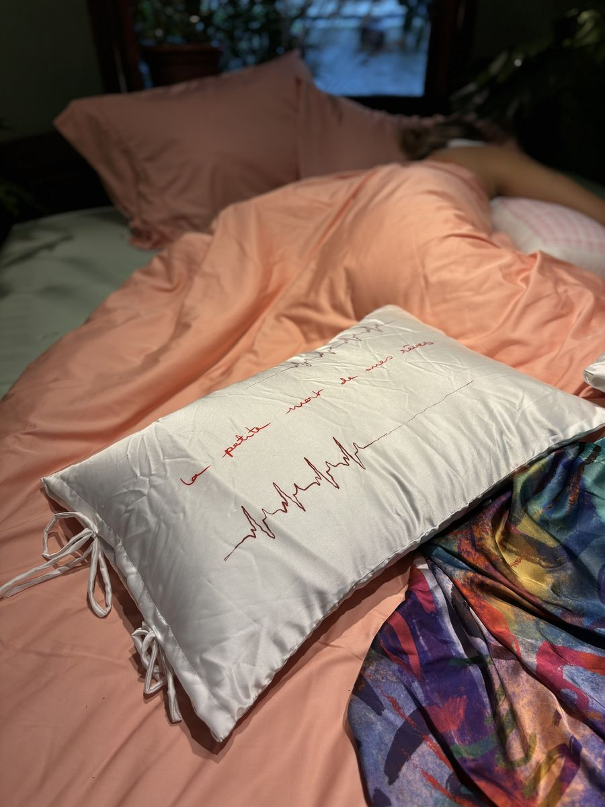

Vỏ gối vẽ tay
36 mẫu vẽ tay trong ba bộ sưu tập, mỗi chiếc gối một chữ ký đỏ nơi góc — như một lá thư nhỏ nằm cạnh bạn mỗi đêm.
Khám pháGóc nhìn của Mô
“từ màu chăn, đến nét gối, mô tìm cách thổi hơi ấm của lối sống thong thả, chậm rãi vào những góc nhà của bạn”
Những lá thư, gửi vào giấc ngủ

Giọng nói khẽ nhất trong nhà. Một dòng chữ viết tay, một trái tim nhỏ, một cánh chuồn chuồn — và lời chúc ngủ ngon thì thầm sát bên tai.

Dành cho những đêm cần được dỗ dành. Câu chữ tinh nghịch mà dịu dàng, bảo bạn buông điện thoại, buông cả ngày dài — hôm nay bạn đã giỏi lắm rồi.

Những dáng người vẽ bằng một nét liền — thư tình gửi người mình thương, và gửi chính bạn, mệt nhoài mà vẫn đáng yêu vào cuối ngày.
Giấc ngủ nuôi dưỡng thân tâm

36 mẫu vẽ tay trong ba bộ sưu tập, mỗi chiếc gối một chữ ký đỏ nơi góc — như một lá thư nhỏ nằm cạnh bạn mỗi đêm.
Khám phá
Mềm như da, mát như sớm mai. Ga, vỏ chăn và trọn bộ trong tám sắc màu dịu, càng giặt càng êm.
Khám phá
Ruột gối ba kích cỡ, ruột chăn nhẹ và tấm topper — những lớp êm lặng lẽ để chiếc giường ôm lấy bạn trọn vẹn.
Khám pháNếp giường nếp chiếu, gốc rễ gia phong

dành năm phút cho người tình đã ôm mình suốt đêm
Không biết nên gọi “making bed” bằng tiếng Việt là gì cho đúng. Dọn giường? Xếp chăn? Trải lại ga? Chưa từ nào thật sự vừa ý — nhưng cảm giác dành vài phút làm chiếc giường đẹp lên thì rất Mô.
Xem nghệ thuật làm giường
thử một đêm cùng mô
Ở Hội An, những căn nhà của Mô đều được sắp đặt ga gối Mô. Hãy nằm xuống, kéo chăn lên tới cằm, và để làn vải tự kể phần còn lại.
Đặt trải nghiệm
Ngủ trên chính bộ ga, gối và tấm throw bạn đang ngắm — làn lụa tre mềm mát, những nét vẽ tay, chữ ký đỏ nơi góc gối. Không phải phòng trưng bày, mà là một chiếc giường thật, một đêm thật.

gửi gắm suy nghĩ và kỷ niệm với chiếc giường qua từng tháng năm
Mô muốn chia sẻ với mọi người về những trải nghiệm thật khác khi nâng niu giấc ngủ cũng như việc ôm ấp bản thân mình sau mỗi ngày, được nghỉ ngơi trên chiếc giường thân yêu của mình. Qua từng bài viết Mô muốn lưu giữ những suy tư, ký ức và mở ra những góc nhìn mới để mỗi người tự khám phá cho mình những trải nghiệm thật khác về chiếc giường và kết nối sâu sắc hơn với bản thân, yêu thương mình nhiều hơn mỗi ngày.
Những mũi chỉ không hoàn hảo, hơi lệch một chút, nhưng nhìn vào là thấy có bàn tay ai đó đã chậm rãi, nâng niu làm ra nó. Tự nhiên thấy chiếc giường bớt xa lạ, căn phòng trở nên ấm áp.
Đọc chuyện
Sexy không phải để phô ra cho ai xem, mà là cảm giác thoải mái khi quay về với chính mình. Và chăn gối mịn mượt, thơm tho, rất nhiều khi, chính là nơi bắt đầu.
Đọc chuyệnTâm huyết của Mô